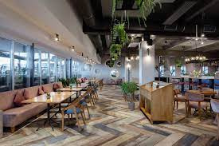
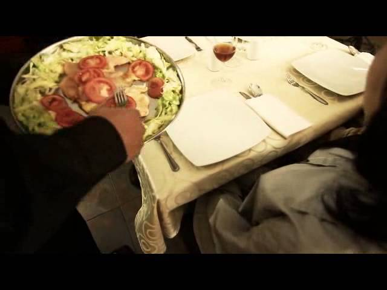

Cuando hablamos de los diferentes tipos de servicios en restaurantes, nos referimos a las diferentes formas de presentar y servir la comida al cliente.
Esta clasificación es esencial para determinar el protocolo de interacción y entrega de alimentos y bebidas a los comensales.
NUESTROS RESTAURANTES

A continuación te mostraremos los tipos de servicios en restaurantes y hoteles más comunes que puedes encontrar,
una clasificación esencial para entender cómo se brinda la atención al cliente en diversos establecimientos culinarios.
Estos tipos de servicios son:
Servicio a la inglesa:
En este tipo de servicio,
los camareros sirven la comida directamente en el plato del comensal desde una bandeja o fuente que llevan en su mano izquierda.
El servicio se realiza por la izquierda del comensal, y se considera formal y elegante.

Servicio a la francesa:
Este servicio es el más tradicional y formal.
La comida se presenta en bandejas o platos al comensal para que él mismo se sirva.
Los platos se presentan por la derecha y se retiran por la izquierda.
Servicio a la rusa o de gueridón:
Este tipo de servicio se caracteriza por el uso de un carrito o gueridón donde se realizan los últimos preparativos del plato frente
al comensal (por ejemplo, flambeado, fileteado, etc.). Es un servicio muy personalizado y espectacular, aunque requiere de habilidades
específicas por parte del camarero.
Servicio a la americana o de emplatado:
Es el servicio más común en la actualidad. Los alimentos ya vienen servidos y presentados en el plato desde la cocina,
y el camarero simplemente los lleva a la mesa. Es un servicio rápido y eficiente, pero con menos formalidad y personalización
que los anteriores.